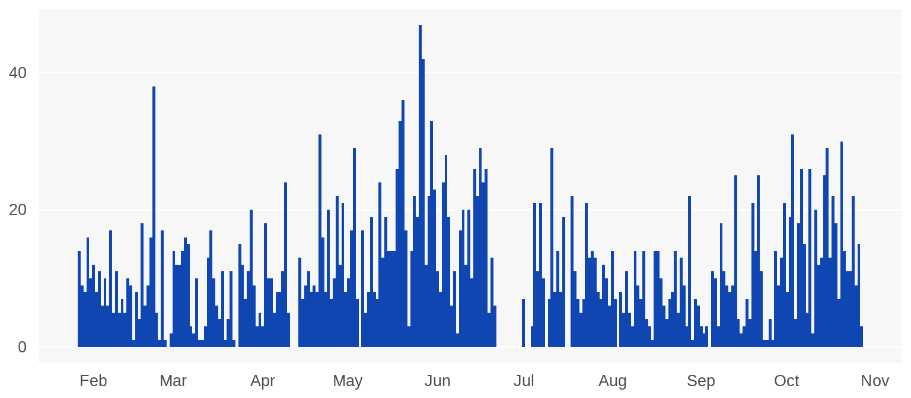
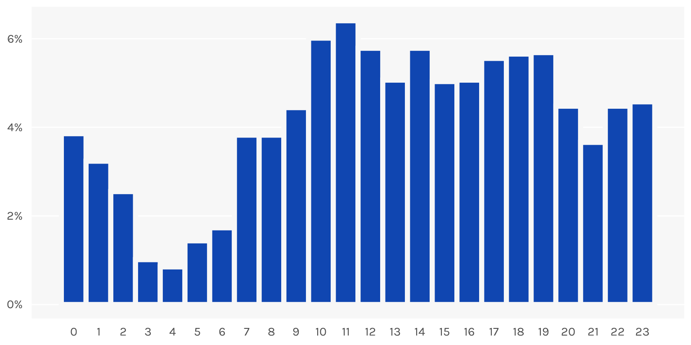
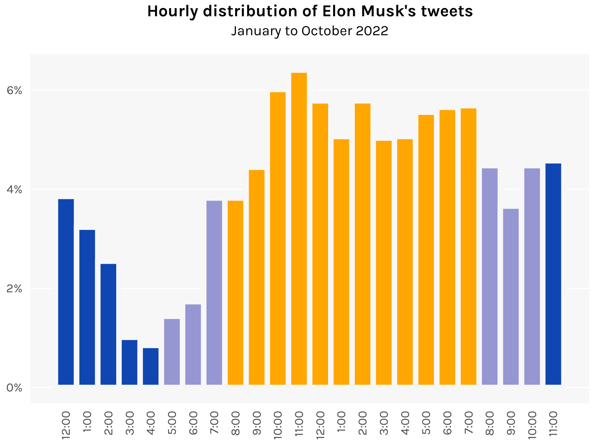

library(tidyverse)
library(lubridate)
library(ggplot2)
df <- here::here("datasets", "elon.csv") %>%
read_csv() %>%
arrange(Date) %>%
mutate(hour(Date) <- hour(Date) + 1)
# Switch from UTC to UTC-6 (Texas)
hour(df$Date) <- hour(df$Date) - 6
df <- df %>%
mutate(
date = date(Date),
hour = hour(Date),
gap = difftime(Date, lag(Date), units = "mins")
)
# Tweets per day: nrow(df) / as.numeric(as.Date("2022-10-27") - as.Date("2022-01-27"))
# Average time between tweets: mean(df$gap[-1])Visualizing Elon Musk’s Twitter addiction
The world’s busiest billionaire finds the time to tweet at all hours of the day
bar
histogram
Elon Musk tweets a lot. Like, a lot. We can quantify it using this Kaggle dataset that contains all of Musk’s tweets between 27 January and 27 October 2022.
The timestamps were in UTC, but since Musk seems to reside mostly in Texas, I switched the time zone to UTC-6.
During this 10-month period, Musk sent out about 11 tweets per day. Put another way, he tweeted every 2 hours and 8 minutes for 10 months. Some of the tweets dabble in great power diplomacy, some are poop emojis.
Looking at the sheer volume of tweets Musk produces, I got to wondering: when does this guy work? Elon Musk is famously a workaholic who claims to work 80-90 hours a week. But… is he just tweeting the whole time? Let’s investigate.
First let’s chart his tweets per day to see what we’re dealing with.
Code
ggplot(df %>% count(date), aes(x = date, y = n)) +
geom_bar(stat = "identity", width = 1, fill = "#1046b1") +
scale_x_date(date_breaks = "1 month", date_labels = "%b") +
scale_y_continuous(breaks = c(0, 20, 40)) +
theme(
axis.title = element_blank(),
axis.ticks = element_blank(),
axis.text.x = element_text(size = 10, margin = margin(5, 0, 0, 0)),
axis.text.y = element_text(size = 10, margin = margin(0, 5, 0, 0)),
panel.background = element_rect(fill = "gray97"),
panel.grid.major.x = element_blank(),
panel.grid.minor.x = element_blank(),
panel.grid.minor.y = element_blank()
)
Interestingly, Musk does take breaks from time to time, like a 10-day stretch in late June. Maybe work picked up?
Now let’s plot an hourly histogram of his tweets.
Code
ggplot(df, aes(x = hour)) +
geom_histogram(aes(y = after_stat(density)),
binwidth = 1, fill = "#1046b1", color = "gray97", linewidth = 2
) +
scale_x_continuous(breaks = 0:23) +
scale_y_continuous(labels = function(x) paste0(100 * x, "%")) +
theme_minimal(base_family = "karla") +
theme(
axis.title = element_blank(),
axis.ticks = element_blank(),
axis.text.x = element_text(size = 10, margin = margin(5, 0, 0, 0)),
axis.text.y = element_text(size = 10, margin = margin(0, 5, 0, 0)),
panel.background = element_rect(fill = "gray97", color = NA),
panel.grid.major.x = element_blank(),
panel.grid.major.y = element_line(color = "white"),
panel.grid.minor.x = element_blank(),
panel.grid.minor.y = element_blank()
)
Wow. It looks like he tweets at pretty much all waking hours of the day. He also seems to not be getting much sleep, with the lull in tweets spanning just 3am to 6am.
Looking through the dataset, what’s more remarkable is that most of his tweets are replies to other tweets. Anyone can tweet 11 tweets per day, but what Musk is doing involves actually browsing Twitter, reading other people’s tweets, and reacting to them. Constantly. All day. Everyday. I suppose an argument can be made that one so thoroughly immersed in the platform (to the point of crippling addiction) is actually well-placed to run said platform. But an argument can also be made that no, what, are you crazy, that’d be a horrible idea.
Here’s a fun data viz exercise to end. Let’s color the bars according to the time of day, with nighttime in blue and daytime in yellow.
Code
daycolors <- c(
rep("#1046b1", 5), # 12am to 4am
rep("#9696d2", 3), # 5am to 7am
rep("#ffa600", 12), # 8am to 7pm
rep("#9696d2", 3), # 8pm to 10pm
rep("#1046b1", 1) # 11pm
)
ggplot(df, aes(x = hour)) +
geom_histogram(aes(y = after_stat(density)),
binwidth = 1, fill = daycolors, color = "gray97", linewidth = 2.5
) +
labs(
title = "Hourly distribution of Elon Musk's tweets",
subtitle = "January to October 2022"
) +
scale_x_continuous(
breaks = 0:23,
label = paste0(c(12, 1:12, 1:11), ":00")
) +
scale_y_continuous(labels = function(x) paste0(100 * x, "%")) +
theme_minimal(base_family = "karla") +
theme(
plot.title = element_text(size = 16, face = "bold", hjust = .5),
plot.subtitle = element_text(size = 14, hjust = .5, margin = margin(0, 0, 15, 0)),
axis.title = element_blank(),
axis.ticks = element_blank(),
axis.text.x = element_text(size = 12, angle = 90, hjust = 1, vjust = .5, margin = margin(5, 0, 0, 0)),
axis.text.y = element_text(size = 12, margin = margin(0, 5, 0, 0)),
legend.position = "none",
panel.background = element_rect(fill = "gray97", color = NA),
panel.grid.major.x = element_blank(),
panel.grid.major.y = element_line(color = "white"),
panel.grid.minor.x = element_blank(),
panel.grid.minor.y = element_blank()
)